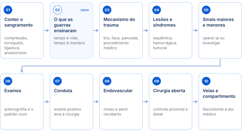
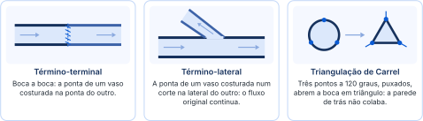
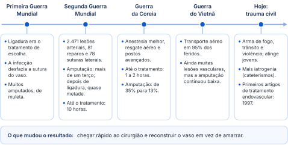
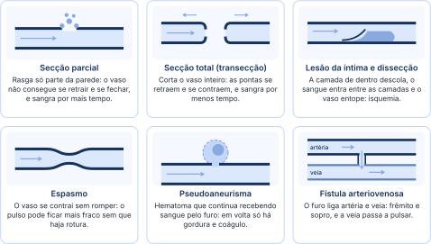
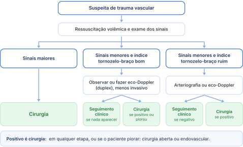

Isquêmica
Falta sangue adiante da lesão: os seis Ps.
Como conter o sangramento, ler o mecanismo e os sinais do trauma, escolher o exame e decidir entre observar, operar aberto ou tratar por dentro do vaso.
Material de estudo da aula de 18 de novembro de 2026, com a linguagem ajustada para leitura. A legenda de cores está na página 2.
“Essa parte do médico em formação, é isso que a gente cobra de vocês.” No fechamento da aula, os pontos que todo médico precisa saber:
“Se vocês assistirem hoje, vocês não vão precisar estudar esse item tanto, porque é difícil estudar uma coisa que você nunca ouviu falar.”

Antes de consertar o vaso, é preciso parar o sangue: apertar o ferimento e a artéria que leva sangue até ele e, se for preciso, garrotear o membro por pouco tempo. Amarrar o vaso também para o sangramento, mas pode custar a perna ou o braço; o ideal é reconstruir.
Diante de quem chega sangrando, o primeiro passo é comprimir. Na compressão direta, uma mão aperta o próprio ferimento. Na compressão indireta, a outra mão aperta, mais acima, a artéria que irriga a região: no braço, por exemplo, comprime-se a axila.
O problema é o cansaço: a mão dói, amortece, formiga e perde a força. Como na massagem cardíaca, é preciso revezar, e cada troca de mão deixa sangrar mais um pouco. Se a coagulação do paciente é normal, o ponto que sangra costuma parar em alguns minutos.
Quanto aguenta a mão e quando o sangramento costuma parar, com coagulação normal.
O torniquete garroteia o membro para que o sangue não passe. Não passa nem para ir nem para voltar: todo o segmento abaixo do garrote sofre, não só a ponta. Um garrote na axila põe o braço inteiro em risco.
Por isso o torniquete não é conduta definitiva. Ele serve para ganhar tempo e perder menos sangue enquanto se prepara o passo seguinte: gaze e atadura limpas sobre o ferimento e enfaixamento compressivo no ponto que sangra. Feito o curativo compressivo, o torniquete sai.
A faixa de Esmarch é uma atadura elástica de borracha. No campo de batalha, foi muito usada para estancar sangramento, mas causava isquemia muito prolongada. Hoje quem mais a usa é a ortopedia, na artroscopia do joelho: por exemplo, para limpar um menisco rompido em alça de balde, que se interpõe e impede o joelho de dobrar.
Na artroscopia, uma câmera entra por pequenos furos na frente do joelho, por um trocarte, e a articulação é irrigada com soro. Se sangrar, não se enxerga nada; e garrotear o membro cheio de sangue parado leva à trombose. A solução:
Ligadura é amarrar o vaso para que o sangue não passe. Durante muito tempo foi a forma de tratar sangramento, e o preço era a amputação. Amarrar um vaso fino e terminal, que não faz falta, é uma coisa; amarrar uma artéria principal é outra.
Amarrada a femoral comum, a coxa e a perna ficam em isquemia.
Ela continua como poplítea e desce; a femoral profunda ainda irriga a coxa.
No linguajar leigo, “ligar o vaso” parece conectar. Em medicina é o contrário: ligadura é perder o vaso, é amarrar, como na laqueadura das trompas. Unir dois vasos para restaurar a circulação tem outro nome: anastomose.
Anastomose é unir dois vasos boca a boca para restaurar a circulação que está vazando ou entupida. Pode ser artéria com artéria, veia com veia ou artéria com veia. Murphy foi o precursor; Carrel consagrou a técnica que ainda se usa e ganhou o Prêmio Nobel por ela.

Na término-lateral, faz-se um corte pequeno na lateral do vaso, sem cortá-lo por inteiro: o sangue passa para o enxerto e continua passando pelo vaso original, como um desvio. Costurar duas bocas de vaso (pense em juntar as bocas de duas mangas de camisa) é difícil: a parede desaba, e o ponto da frente acaba pegando um pedaço da parede de trás, o que obriga a desmanchar a sutura. A saída de Carrel, a triangulação:
Pouco depois veio o enxerto de veia, documentado em 1906. A lesão que mostra por que ele é necessário aparece no pronto-socorro: depois de beber e brigar, o homem dá um soco numa porta de vidro, cai sobre o vidro e corta pele, gordura, músculo, vaso e nervo, até parar no osso. É o que se apelidou de “x-tudo de braço”, a lesão de trauma mais grave do pronto-socorro, com risco de perder o braço.
A artéria braquial cortada por completo se retrai. As pontas não se encontram, e é preciso soltar alguns ramos para ganhar comprimento. O corte também não é limpo como o de um bisturi: o vaso foi esmagado, e o trecho esmagado precisa ser recortado até a parte boa. Se mesmo assim as pontas não chegam, interpõe-se um pedaço de veia (safena, cefálica ou basílica) entre a parte de cima e a de baixo. A reconstrução é difícil, porque a inervação se perde junto.
“Não adianta você ter talento, mas ninguém deixa você expor o que você tem para expor. Não adianta você ter condições de expor, ter talento, ter professor bom, só que você fica retraído, com vergonha e nunca se manifesta.”
Quase tudo o que se sabe sobre machucados de vasos foi aprendido na guerra. A grande virada foi trocar o “amarra e amputa” pela reconstrução do vaso e encurtar o tempo até o cirurgião.
O trauma vascular junta um pouco de doença arterial, venosa e linfática com um evento acidental. Errar é humano, mas na medicina o erro custa caro para o paciente e para quem o atende; o que hoje se sabe foi se acumulando, sobretudo, nas guerras civis, militares e urbanas.
Hoje, quem tem glicemia de 110 ou 115 já trata, porque se sabe do dano às células e aos órgãos; antes, só se medicava acima de 150 ou 200, depois de esgotar as medidas clínicas. O buflomedil já foi o remédio da moda para a doença arterial periférica, depois veio o cilostazol, e hoje o cilostazol não é o primeiro: o claudicante recebe tratamento clínico otimizado, com antiagregante, anticoagulante em dose muito baixa (estudo COMPASS), exercício e dieta. No trauma vascular também foi assim.
O controle de sangramento já foi ferro quente e tecido humano, animal ou vegetal sobre a ferida, como a folha mastigada dos filmes; já se registrou até fezes de cavalo e de cachorro. Achava-se que o material orgânico ajudava, mas ele causava muita infecção, e a infecção levava à amputação. A história do trauma vascular remonta ao século XVIII, e dela vêm a sutura em oito com alfinete, a sutura lateral e, depois, a anastomose término-terminal.
A medicina se aprendia como aprendiz de um mestre, só olhando, e os vícios passavam adiante. Hoje o conhecimento está registrado, e o que não funciona é descartado. Algumas ideias antigas têm fundamento: o eletrocautério queima e faz hemostasia na cirurgia, e o frio também (o sorvete depois de arrancar um dente). Mas pôr pólvora num ferimento e acender, como na cena do filme Rambo, não é prática médica.
“Ciência significa algo que alguém já testou e você consegue reproduzir. Se alguém fez uma sutura lá no passado e hoje você faz exatamente igual e tem o mesmo resultado, isso é ciência.”
Na guerra, o problema do cirurgião é duplo: sangramento e infecção. Se a sutura do vaso infecciona, ela se abre e vaza sangue, e o ferido morre sangrando. Por isso, na Primeira Guerra Mundial, a ligadura era o tratamento de escolha, e sobravam amputados de muleta.

A lógica da guerra também pesou: ferir rende mais que matar, porque cada ferido tira de combate ele mesmo e quem o carrega; o estilhaço de granada, por exemplo, fere muitos sem matar. Do outro lado, a proteção também evoluiu, como o colete à prova de balas, de Kevlar.
O filme começa na guerra civil americana. Ferido na perna, o protagonista espera na fila do posto médico, onde quem leva tiro no braço ou na perna é amputado: amputar e aposentar o soldado saía mais barato que reconstruir o membro. Desesperado, ele monta a cavalo e avança contra o inimigo para morrer como herói; a tropa o segue e vence a batalha. Como recompensa, pede para não perder a perna, é levado a um hospital geral com cirurgiões e a perna é salva, provavelmente uma lesão arterial restaurada a tempo. Mas a maioria dos feridos estava longe de tudo, como no Vietnã.
Na Guerra da Coreia, a cirurgia avançou e a anestesia melhorou. O maior avanço da cirurgia foi a anestesia: antes, bom cirurgião era o que operava rápido, com o paciente sangrando e sentindo dor. O resgate aéreo e os postos médicos avançados aproximaram o médico do ferido, e o tempo até o tratamento caiu de 10 horas para 1 a 2 horas. Manter o soldado vivo também melhora a moral de quem vai para a guerra.
Tempo é vida, tempo é membro: o tempo de isquemia é o tempo de sobrevida do membro que está isquêmico.
Fora da guerra, o trauma vascular vem da violência urbana (favela, assalto, violência doméstica) e dos acidentes de carro e moto no trajeto para o trabalho ou para a aula: atinge sobretudo jovens. Antes predominava o sexo masculino, porque o homem saía para trabalhar na roça ou na fábrica; hoje isso mudou. E os casos só aumentam: mais arma de fogo, mais violência, mais acidentes e mais iatrogenia, a lesão que acontece durante um procedimento médico, como os acessos de cateterismo.
Saber como a pessoa se machucou diz o que procurar. Tiro destrói muito, inclusive longe do furo; faca corta só o caminho por onde passou; pancada e torção esmagam e esticam um trecho grande do vaso. E até um procedimento médico pode machucar um vaso.
Diante de um traumatizado, a pergunta é: o que espero encontrar? A resposta vem do mecanismo. Dor de cabeça depois de bater a cabeça pode ser a idosa que tropeçou e caiu da própria altura, o pedreiro que caiu de um andaime de três metros sem capacete ou o motociclista que bateu num ônibus: situações completamente diferentes.
O ferimento por arma de fogo ainda responde por mais da metade das lesões (dado de 1998, que não mudou: arma de fogo está em alta). Mesmo a facada hoje é chamada de lesão cortocontusa: além de cortar, esmaga. Corte puro é o do bisturi, só a lâmina fina.
Exemplo de arma de fogo: numa angiografia do pescoço cheia de estilhaços, a carótida mostra uma bola para fora do vaso. Pelo contexto, é um pseudoaneurisma: houve sangramento agudo e ficou a bola. Quando o mesmo ferimento atinge a artéria e a veia ao lado, o sangue passa da artéria direto para a veia, formando uma fístula arteriovenosa: na fase arterial do exame, já aparecem veias se enchendo.
A faca, ou qualquer instrumento pontiagudo, faz lesão limitada ao trajeto, sem cavitação, com menor destruição de tecido; muitas vezes é acidente doméstico. Por se parecer com o corte do bisturi, é muito mais fácil de restaurar que um tiro.
Um paciente de Palotina foi encaminhado por perna inchada. Com o estetoscópio, sopro; com a mão, um tremor, o frêmito. Na perna, uma cicatriz: anos antes, num churrasco, a faca caiu, cravou na panturrilha e ele a arrancou na hora, algo que nunca se deve fazer. No pronto-socorro, com sangramento intenso, o plantonista deu um ponto para parar de sangrar para fora e enfaixou; ficou internado de 12 a 24 horas, parou de sangrar, tirou o ponto em uma semana.
A faca tinha atingido a artéria tibial anterior e as veias tibiais anteriores: o sangue saía da artéria e entrava na veia, formando um pseudoaneurisma ligado à veia, uma fístula arteriovenosa. Treze anos depois, a fístula tinha crescido tanto que a safena engrossou e todas as veias da perna pulsavam.
Na arteriografia, o vazamento ativo aparece como uma mancha de contraste fora do vaso, o blush: em tempo real, o contraste sai a cada batimento cardíaco.
O trauma contuso é pior, porque esmaga, e o segmento esmagado se deteriora. Compare: cortado com faca, o vaso muitas vezes só precisa ter as pontas unidas. Atingido por tiro, perde 1 a 2 cm queimados e rebarbados, que precisam ser desbastados até ficarem regulares; às vezes é preciso soltar ramos para as pontas chegarem e, se não chegarem, interpõe-se veia. Esmagado (um pneu que passa sobre a coxa, em cima da femoral superficial), não adianta só passar o cateter, limpar e deixar o fluxo passar: o trecho trombosa uma vez atrás da outra, e o paciente perde a perna.
Um atleta de 16 anos, rapidíssimo, contratado para jogar futebol em Cascavel, enfiou o pé num buraco do campo: a perna ficou e o corpo foi, e o joelho dobrou ao contrário, numa luxação completa. Na unidade de pronto atendimento, o pé estava gelado, pálido e muito doloroso, sem fluxo nenhum. No hospital, a equipe operou por 11 horas: fez uma ponte curta com veia safena magna, que entupia, era desentupida e voltava a entupir, até desistirem. No dia seguinte, a perna estava rígida, com os músculos endurecidos, como na rigidez cadavérica: não havia mais o que salvar, e ele foi amputado.
Luxar o joelho por completo estira todos os vasos e nervos da região poplítea. Pense num canudinho de plástico azul esticado: ele não arrebenta, fica comprido e branco. A artéria fez o mesmo, e não só no ponto do joelho: estragou para cima e para baixo. A camada muscular e o endotélio ficaram alterados; mesmo sem romper, o vaso virou um tubo que não serve para mais nada. E, pela tríade de Virchow, endotélio lesado trombosa sem parar.
A ponte curta sobre o joelho continuava ocluindo, porque o trecho estragado era maior. O ideal é ser mais agressivo: levar a ponte de onde nada aconteceu, lá em cima, até onde nada aconteceu, lá embaixo; o sangue chega embaixo e reflui pelas artérias tibiais.
Contusão, esmagamento e estiramento são lesões muito graves e vêm com outras estruturas lesadas. Uma fratura espiralada, com várias rachaduras longitudinais além do desvio transversal, não foi trauma simples. Numa luxação de joelho sem fratura, a artéria femoral chega ao joelho e é interrompida, e só algumas colaterais geniculares levam um pouco de sangue para baixo, o que não sustenta o membro. Geralmente é paciente jovem, sem artrose, de moto.
Fraturas e luxações associadas (platô tibial, côndilo, cotovelo) às vezes escondem uma lesão vascular. A primeira coisa é reduzir: muitas vezes, ao reduzir, a perfusão e o pulso voltam sozinhos. Mas é preciso reavaliar sempre. Não basta ver de manhã que está tudo bem e voltar só no dia seguinte: até lá podem ter passado horas de isquemia, sem mais o que recuperar. Paciente com fratura que em algum momento teve pulso mais fraco ou palidez fica sob vigilância, porque a isquemia pode voltar.
Iatrogenia nem sempre é erro médico: é a lesão que faz parte dos riscos de um procedimento.
O vaso pode rasgar de lado, ser cortado inteiro, descolar por dentro, se contrair ou se ligar a uma veia. No paciente, isso aparece de três jeitos: o membro fica sem sangue, o sangue sai, ou aparece um caroço, às vezes pulsando.
As formas de lesão do vaso são a laceração (secção parcial), a transecção (secção total), a lesão da íntima com dissecção, o espasmo arterial, o pseudoaneurisma e a fístula arteriovenosa.

Isquêmica, hemorrágica ou tumoral, ou todas juntas: o membro pode estar sangrando, isquêmico na ponta e com uma bola formada pelo sangramento.
Falta sangue adiante da lesão: os seis Ps.
O sangue sai, para fora ou para dentro; o risco é o choque.
Aparece uma massa: hematoma, pseudoaneurisma, fístula arteriovenosa.
Em vascular, sempre se compara um membro com o outro: quase sempre um lado está normal e serve de parâmetro. Tiro na perna direita: o pé direito está gelado e o esquerdo quente? Um tem pulso e o outro não? Um está vermelho e o outro cianótico? Compare cor, perfusão, temperatura, pulso, volume (inchaço), sopro e frêmito; a fístula arteriovenosa faz os dois.
Some a isso a história e o mecanismo: se sangra ou não, se há alteração neurológica (que fala de isquemia ou de esmagamento de estruturas) e se há fratura associada, que aumenta a energia do trauma e o risco de lesão vascular.
Um quarto dos pacientes com lesão arterial chega com pulso. Pode estar com pulso agora e, meia hora depois, perder o pulso e estar em isquemia total. Por isso: palpar o pulso, ver perfusão e temperatura, reavaliar e anotar.
Anotar protege o paciente e o médico. Hoje quase tudo é judicializado, e o juiz considera o que está escrito; o que não foi escrito não tem como ser comprovado. O prontuário eletrônico registra data e hora de cada anotação: mudar o registro depois, ainda mais com o processo em andamento, é adulterar dados.
“Você deve sempre observar, examinar e anotar.”
O mnemônico dos “Ps” vem do inglês: dor, parestesia, paralisia, palidez, frio (hipotermia do membro) e ausência de pulso. Entendendo a isquemia, nem é preciso decorar. Alguns sinais se veem, outros se sentem e outros o paciente conta:
Pele pálida; o membro não se mexe.
Membro frio; pulso ausente ou reduzido.
Dor, formigamento, anestesia.
O diagnóstico nunca pode ser tardio: só se recupera o membro pego na fase inicial. Isquemia é grave.
A hemorragia geralmente se vê: o sangue se exterioriza. No curso de Suporte Avançado de Vida no Trauma (ATLS, na sigla em inglês), o controle do sangramento era a letra C do ABC; agora vem no início, na letra A, junto com a via aérea. Não adianta procurar via aérea e ventilar enquanto o paciente se esvai em sangue: alguém cuida da via aérea e, ao mesmo tempo, faz a hemostasia.
No choque hemorrágico (classes I a IV), o primeiro sinal é a taquicardia, não a hipotensão. O corpo primeiro acelera o coração para aumentar o débito; só quando esse mecanismo se esgota a pressão começa a cair. E a ausência de pressão arterial já é quase jogo perdido: não se pode deixar chegar a esse ponto.
Um triatleta tem frequência de repouso de 40, não de 60 a 80: para ele, 70 já é taquicardia, quase o dobro do habitual. E pressão de 10 por 6 não obriga a correr soro e noradrenalina: pode ser a pressão habitual da pessoa. Pergunte: qual a sua pressão e a sua frequência cardíaca de costume?
“A gente sempre fala isso aí, sempre cai na prova, sempre a gente fica discutindo.”
Pense na artéria femoral. Na secção total (transecção), o vaso se desconecta por inteiro; na parcial, rasga de lado, metade, e a outra metade continua ligada.
Na síndrome tumoral aparece uma massa, às vezes com frêmito e sopro. O mais comum é o hematoma e o pseudoaneurisma. O pseudoaneurisma nada mais é que um hematoma que não parou de ter fluxo: houve um furo, o sangue sai e volta para dentro do vaso, mas a bola não tem as camadas de um vaso, só gordura e coágulo em volta. Por isso é “pseudo”: há perda de continuidade, e a bola não é segura. Ele pode:
Sangramento arterial forma uma massa gigante, porque a pressão é alta; se fosse venoso, já teria parado. Com o efeito de massa, a perna pode mudar de cor em relação à outra. Pode acontecer em qualquer artéria, como na carótida.
A fístula arteriovenosa liga artéria e veia. Com o tempo, aumenta o débito e a pré-carga e pode levar à insuficiência cardíaca, não de um dia para o outro. Um atleta de 20 ou 30 anos pode passar décadas sem repercussão; no idoso que já internou por insuficiência cardíaca, a fístula o empurra mais rápido para o precipício.
A fístula também rouba sangue de adiante: o desvio para a veia puxa sangue até da parte distal, em fluxo reverso. Na fístula de hemodiálise feita na radial, a veia que recebe o sangue chupa sangue da mão; por isso a artéria ulnar precisa estar boa para manter a fístula.
Alguns sinais mandam operar já: sangue jorrando, membro branco e frio, caroço que cresce ou pulsa. Outros pedem investigação e observação de perto, porque não há risco imediato de perder o membro ou a vida.
Depois do trauma, os sinais separam dois grupos. Os maiores são sinais de má evolução e exigem atitude mais rápida e mais invasiva. Os menores permitem adiar a cirurgia, tratar clinicamente e observar por mais tempo, porque não há risco iminente de perder o membro ou a vida.
Pressão da perna em relação à do braço, medida com Doppler. Abaixo de 0,9 (90%), é sinal menor; se o fluxo some, é isquemia.
Depois de um cateterismo pela femoral, forma-se um hematoma na virilha, e alguém marca o limite com caneta. Horas depois, a mancha roxa se espalhou e chamam o médico porque “aumentou”. Não aumentou: hematoma é a massa; equimose é o roxo, e todo roxo se espalha. Para comparar de verdade, o ideal é registrar com foto ou a mesma pessoa que marcou reavaliar.
Mesmo os sinais maiores podem dar falso-positivo ou falso-negativo, mas com eles a exploração cirúrgica é o melhor caminho. Esperar indefinidamente a massa que dobrou de tamanho não faz sentido. Ao explorar, mesmo que não haja lesão ativa naquele momento, esvazia-se o hematoma e, se houver um furinho, um ponto resolve, e o paciente pode ter alta em vez de ficar internado à espera.
Deve-se ser agressivo na procura e, achando, tratar: às vezes não tratar é pior. Já houve época em que um hospital era considerado bom se tinha mais laparotomias brancas na suspeita de apendicite: sinal de que ninguém com apendicite ficou sem operar ou foi operado tarde. Suspeitou, vai para a cirurgia.
Na formação dele, o residente de primeiro ano só operava a apendicite que diagnosticasse pela clínica (história, posição, tipo de dor, exame físico). Se pedisse raio X ou hemograma, o caso era mais complexo e passava para um residente mais antigo. Era preciso examinar, apertar, soltar e decidir.
Com sinais menores, a necessidade de cirurgia é menor. Sem nenhum sinal ao exame físico, a chance de lesão é praticamente zero; com sinais menores, a arteriografia encontra lesão em até 21% dos casos, e o que se acha costuma ir para cirurgia.
Há o exame sem imagem, que mede a pressão no tornozelo com um aparelhinho de som; o ultrassom, que mostra o vaso sem agulha; e a arteriografia, que injeta contraste dentro da artéria e mostra o sangue passando. Cada um tem seu lugar.
No trauma, em geral é preciso ver a ida e a volta: a arteriografia e a flebografia. Mas o mais grave é a isquemia: a lesão arterial é a que costuma fazer perder o membro.
Não é exame de imagem, é um registro de som. Infla-se o manguito e solta-se aos poucos; o ponto em que o som do Doppler volta (o pico sistólico) é anotado, no braço (artéria braquial) e no tornozelo (tibiais anterior e posterior). É um método muito disponível para o cirurgião vascular. Atenção: o aparelho automático, que infla, desinfla e dá a pressão sozinho, não serve para isso; é preciso o manguito manual, de consultório.
Ecografia com Doppler, ultrassom Doppler, duplex (nome antigo) e Doppler colorido são a mesma coisa. Com imagem, mostra massa, compressão, artéria e veia; no modo colorido, mede velocidade e mostra onde sangra e onde está ocluído. Por enxergar a estrutura e a vizinhança, tem sensibilidade e especificidade maiores que o Doppler às cegas. Hoje os aparelhos diferenciam muito bem artéria e veia.
Não funciona onde o som não se propaga: na barriga distendida (artéria mesentérica e aorta abdominal; lembre a aula de isquemia intestinal) e na aorta torácica, por causa do pulmão. Esmagamento e tiro de alta velocidade também atrapalham o ultrassom.
Em trauma vascular, a arteriografia é o padrão-ouro para ver a artéria. É dinâmica: injeta-se o contraste e vê-se o contraste chegar, passar, extravasar, ficar retido ou seguir para onde deve; vê-se oclusão e sangramento. A tomografia é estática: mostra a estrutura, sem dizer de onde o sangue vem nem para onde vai.
O contraste iodado tem a mesma densidade do osso e do metal, por isso o vaso aparece. Ela pode ser convencional, como o raio X simples, ou digital, com subtração: o aparelho apaga o que está na frente ou atrás (costela, coluna, placas, parafusos) e deixa só o vaso contrastado. Sem subtração, fêmur e vaso aparecem com a mesma densidade, e tudo fica borrado.
No dia a dia do politrauma com abdome agudo, faz-se angiotomografia: é mais rápida, avalia mais coisas ao mesmo tempo e permite decidir logo, “aí ninguém discute”. Mas, se a pergunta for o melhor exame ou o padrão-ouro para ver o vaso no trauma, a resposta é arteriografia.
Exemplos vistos em aula: oclusão atrás do joelho, numa artéria lisa, sem aterosclerose (paciente jovem, provável luxação), com colaterais reenchendo abaixo; oclusão com uma colateral que não segue o trajeto da poplítea e uma linha de fratura no platô da tíbia; perfuração com vazamento ativo, que na imagem dinâmica vaza a cada batimento.
Com a suspeita, primeiro se estabiliza o paciente e se olham os sinais. Qualquer exame que confirme a lesão leva à cirurgia, aberta ou por dentro do vaso. Deixar em observação é uma decisão que exige alguém observando de verdade.
Diante da suspeita, faz-se a ressuscitação volêmica e olham-se os sinais. Sinais maiores: cirurgia. Sinal menor com índice tornozelo-braço bom: dá para continuar observando ou fazer o eco-Doppler, que é menos invasivo; se nada aparecer, seguimento clínico. Sinais menores com índice ruim: arteriografia ou eco-Doppler. Em qualquer ramo, positivo é cirurgia, e a cirurgia pode vir a qualquer momento, se o paciente piorar.

Conduta não cirúrgica é observar e acompanhar com ultrassom. Cirurgia é a aberta e a endovascular. O endovascular é uma cirurgia sem grande incisão: por um furinho, o cateter leva stent, stent recoberto, mola ou balão de angioplastia até a lesão.
Na conduta não cirúrgica, observa-se e procuram-se lesões ocultas; se o exame de imagem confirmar, vai-se para a cirurgia. Um pseudoaneurisma também pode piorar e precisar de procedimento.
Mesmo no tiro, operar ou observar depende de conhecer o mecanismo. No politrauma, a prioridade é cérebro, coração e abdome: com traumatismo craniano e baço ou intestino sendo operados, não se faz nada intempestivo no braço de quem está quase morrendo. O contrário também vale: lesão isolada da artéria radial, com ulnar boa e nada mais? Não se sacrifica a radial: restaura-se, porque o paciente tem condições de fazer só esse reparo e ficar bom.
Exemplo de aula: projétil dentro do tórax e uma pequena irregularidade na margem da artéria axilar, sem extravasar e sem ocluir. Dá para acompanhar. Com sinal menor, o tratamento não operatório pede:
Isso só dá certo se você ou seu time acompanharem à risca se o paciente está estável: se instabilizar, alguém tem de entrar em cirurgia naquele momento. Não vale decidir observar na sexta-feira e deixar o problema para o plantonista de sábado, nem deixar o paciente num hospital sem condições de seguir o caso. Quem decide observar escreve o que viu, assina e assume o risco.
“Imagina você que é o doente e o médico resolve que vai ficar aí em observação. Mas quem vai observar e quem vai assumir essa bronca?”
O ultrassom acompanha o efeito de massa e a compressão (o sangramento pode comprimir nervos) e diagnostica o pseudoaneurisma, que pode surgir depois de um procedimento, com sucesso em 70 a 90% dos casos. Há várias formas de tratar:
Por um furinho na pele, um cateter leva até o ponto que sangra uma mola, um pó que entope ou um tubo forrado que veda o vazamento, sem abrir o paciente.
Até pouco tempo, dizia-se que o endovascular só servia para o trauma eletivo, no paciente estável, que não está morrendo. Hoje, às vezes, é mais rápido que anestesiar, abrir a barriga e dar um ponto. No aneurisma roto, pôr uma endoprótese em vez de abrir o abdome salva vidas em muitos casos: o paciente nem precisa ser intubado, só uma sedação leve, sem oscilar a pressão (nem hipotensão, nem hipertensão), e o vazamento é selado rapidamente.
O pseudoaneurisma cheio de estilhaços deixou de ser alimentado; depois, só ficaram os estilhaços.
O contraste injetado na ilíaca enchia a veia cava; com o stent, o sangue segue só para a aorta e as pernas.
Artéria e veia femorais profundas comunicadas; uma mola maior que o habitual ocluiu o ponto e a veia parou de reencher.
A artéria perfurada num procedimento foi restaurada com stent recoberto no ponto.
No caso da fístula, o exame foi feito por cateterismo da artéria femoral esquerda até a ilíaca comum esquerda, com um cateter pigtail (“rabinho de porco”, com vários furos).
Motociclistas costumam ter disjunção sacroilíaca: a pelve “em livro aberto”. Fecha-se a pelve com parafusos ou com fixador externo, uma espécie de morsa cravada nas duas cristas ilíacas. No resgate, um lençol passado por trás e amarrado na frente fecha a pelve e diminui o sangramento da articulação sacroilíaca. Se há sangramento ativo, cateteriza-se seletivamente o ramo da ilíaca interna que vaza e injeta-se o pó para entupir.
O tratamento endovascular é recente: os primeiros artigos no trauma são de 1997. O cateterismo cardíaco veio primeiro e ficou com os materiais e a tecnologia; a cirurgia vascular, o “primo pobre”, foi adaptando tudo para as artérias periféricas. Hoje quase tudo se faz por endovascular, com cada vez menos cirurgia aberta.
O problema dos próximos anos: quando o endovascular não resolve (uma prótese infectada que exige uma ponte, por exemplo), faltarão cirurgiões treinados para abrir. É ruim, porque todos deveriam saber fazer de tudo; e é bom para quem souber, que estará no topo. O ideal é uma equipe com quem faz cirurgia aberta, quem faz endovascular, quem faz bem artéria e quem faz bem veia.
Nos filmes, arrancar a bala salva o herói. Na vida real, tirar a bala não é uma opção inteligente por si só: com uma bala alojada no saco pericárdico sem causar prejuízo, é melhor deixá-la quieta do que abrir o esterno para retirá-la.
Na cirurgia aberta, primeiro se fecha a entrada e a saída do sangue; depois se tira o coágulo, se remenda o vaso ou se faz uma ponte com veia da perna sadia, se confere com contraste e se cobre o vaso com tecido.
No atendimento inicial, cuida-se do risco de vida e do risco de perder o membro: o controle da hemorragia está na avaliação primária. Na avaliação secundária, na fase de exposição, volta-se a procurar sangramento e a ver se algo evoluiu. Na cirurgia do politrauma, com ou sem lesão vascular:
Antes de mexer na lesão, controla-se sempre o vaso acima e abaixo dela. Pense em trocar a torneira do banheiro sem fechar o registro: vaza sem parar até acabar a água da caixa. O controle proximal é fechar o registro. E por que distal também? Porque a artéria não tem válvula: fechando só em cima, as colaterais reenchem o vaso por baixo, e ele continua sangrando de baixo. Na prática, passa-se um laço em volta do vaso acima e abaixo e clampeia-se.
A veia safena magna é o enxerto mais usado. Por que invertida, de cabeça para baixo? Por causa das válvulas: do jeito que está, o sangue arterial bate na primeira válvula e não desce. Invertida, as válvulas ficam a favor do fluxo. Outra opção é destruí-las com o devalvulador: liga-se a safena à artéria femoral, solta-se o fluxo e, com um ganchinho passado por baixo, rasga-se uma válvula de cada vez, até o pulso chegar à ponta.
O enxerto sintético fica reservado para cirurgia limpa; com contaminação ou infecção, usa-se enxerto biológico, a safena. O fio é não absorvível: um fio absorvido em um mês deixaria vazar o vaso, que é de alta pressão. Usa-se polipropileno, monofilamentar, resistente e pouco reativo; um fio de algodão, por exemplo, faz trombose. Como linha de pesca: lisinho e pouco reativo.
Clampeia-se acima e abaixo, abre-se no meio e faz-se anastomose término-terminal com prótese bifurcada, em forma de calça. Sem prótese disponível, às vezes se monta uma bifurcada com a veia femoral. É o que estava indicado para o aneurisma de Albert Einstein (lembre a aula de aneurismas): envolvido com celofane numa primeira cirurgia, para não crescer, ele cresceu e rompeu, e Einstein recusou a troca pela prótese.
Nas lesões de partes moles, desbrida-se o tecido morto. O vaso e o reparo não podem ficar expostos, senão trombosam: cubra a artéria ou a veia com músculo, gordura e pele. Nas lesões ortopédicas, o fixador externo às vezes evita invadir mais a região.
Uma veia grande machucada, num paciente que está morrendo, pode ser amarrada para salvar a vida. Mas a perna incha, e se o músculo incha dentro da capa que não estica, é preciso abrir essa capa. Quem abre é o médico que estiver ali.
Até aqui o assunto foi artéria, isquemia e perda de membro. Na veia é diferente. Mas “é veia, pode amarrar” não é regra: a lesão do sistema profundo de alto fluxo (femoral, poplítea, cava) pode complicar se a veia for perdida, porque amarrar uma poplítea equivale a uma trombose venosa profunda.
É a lógica do controle de danos, comum na cirurgia do trauma. No paciente operando o abdome ou o coração, não se perde tempo restaurando a poplítea. No trauma abdominal fechado com o fígado sangrando, enche-se a barriga de compressas, fecha-se e leva-se o paciente para a terapia intensiva; quando melhora, volta-se, tiram-se as compressas uma a uma, faz-se a hemostasia e restaura-se. Às vezes é preciso interpor enxerto na veia; às vezes, a ligadura é melhor que a restauração. Na imagem, a lesão venosa pode aparecer com ruptura, extravasamento e trombose.
Toda ligadura venosa deixa a perna mais inchada. A revascularização de um membro que estava isquêmico também incha: a isquemia recruta vasodilatação periférica e acumula detritos, e quando o sangue volta, o músculo incha. Nos dois casos, há um enorme edema muscular dentro de uma fáscia fechada, que não estica: é a síndrome compartimental.
Um homem atropelado teve a panturrilha esmagada por um pneu. Não está isquêmico, mas a dor aumenta sem parar, o músculo fica duro como um pau, sangrou por dentro. Depois, o pé começa a formigar e a ficar pálido, por causa do edema do esmagamento, sem lesão vascular. Basta uma incisão na pele e na fáscia muscular: o músculo “pula para fora” e o problema se resolve naquele momento.
Isquemia e reperfusão, criada pelo próprio cirurgião vascular.
O sangue não volta direito e a perna incha.
Sem lesão vascular; o ortopedista costuma ver.
Fasciotomia é abrir a fáscia e liberar o músculo inchado e preso. Quem faz: o cirurgião vascular? O ortopedista? O clínico? O médico que pegou o caso primeiro. Não é exclusividade de nenhuma especialidade, assim como ninguém deixa de fazer reanimação cardiopulmonar porque “é do cardiologista”: todo médico precisa saber diagnosticar e agir.
No pronto-socorro de um hospital grande, o paciente está no centro cirúrgico em 10 minutos: avise e peça à ortopedia ou à cirurgia vascular.
Numa cidade pequena, sem ninguém para aceitar o paciente, esperar a vaga do dia seguinte pode custar a perna.
“‘Ah, tive esmagamento, a perna inchou, endureceu, doeu, ficou pálido, gelado e o médico não me operou. Só no outro dia que me transferiu. Me amputaram lá.’ Você tá ferrado, porque você não fez o que tinha que fazer.”
“Eu quero que você saiba que um cara que teve uma luxação de joelho e não tem pulso é uma emergência. Um cara que teve um tiro e está chocado provavelmente tem uma hemorragia interna.”
Compressão direta no ferimento e indireta na artéria que chega (cerca de 30 min na femoral); o torniquete é só provisório, até o curativo compressivo.
Ligadura é amarrar e perder o vaso; unir vasos é anastomose.
O mecanismo dita a lesão: tiro faz cavitação; faca, só o trajeto; contusão esmaga e estira, com tendão, músculo, osso e nervo.
Luxação de joelho sem pulso é emergência; artéria estirada pede ponte de área sã a área sã.
Fratura ou luxação associada: reduzir primeiro e reavaliar sempre.
Sempre comparar com o outro membro e anotar tudo: 1 em cada 4 chega com pulso.
Três síndromes: isquêmica (dor, parestesia, paralisia, palidez, frio, pulso ausente), hemorrágica e tumoral.
O controle do sangramento passou para o começo do ABC do trauma, na letra A.
O primeiro sinal de choque é a taquicardia, antes da hipotensão; compare com o basal.
A secção parcial sangra por mais tempo que a total.
Sinais maiores (sangramento ativo, isquemia, hematoma que cresce, frêmito e sopro): explorar. Sinais menores (sangramento que parou, pulso diminuído, hematoma estável, índice abaixo de 0,9): observar e investigar.
Hematoma é a massa; equimose é o roxo que se espalha.
Arteriografia é o padrão-ouro (15 cm acima e abaixo, duas incidências); no politrauma com abdome agudo, angiotomografia.
Exame positivo é cirurgia, e endovascular também é cirurgia.
Controle proximal e distal sempre: a artéria não tem válvula.
Safena magna invertida por causa das válvulas, tirada da perna não acometida.
Fasciotomia é ato médico: faz quem pegou o caso primeiro.